2 A solution
2.1 Minimising homoplasy
A solution can be found if the goal of parsimony is recast not in terms of minimising the number of steps, but instead of minimising the amount of homoplasy in a tree.
De Laet has made this point before (De Laet, 2005,De Laet (2017)), suggesting that a tree’s score should be calculated as
Total score = Number of steps + Number of (additional) regions.
Practically, because the number of unavoidable regions is a function of a dataset and not of a tree, one could also count
Total score = Number of steps + Number of regions
which would be a constant number larger than the total score generated just counting additional regions; the absolute value of the score is not meaningful in itself and is not comparable between datasets, so the calculation method does not affect tree search.
The tree below gives an example of a tree in which a character in applicable in two regions (one more than the minimum possible, one) and one state change.
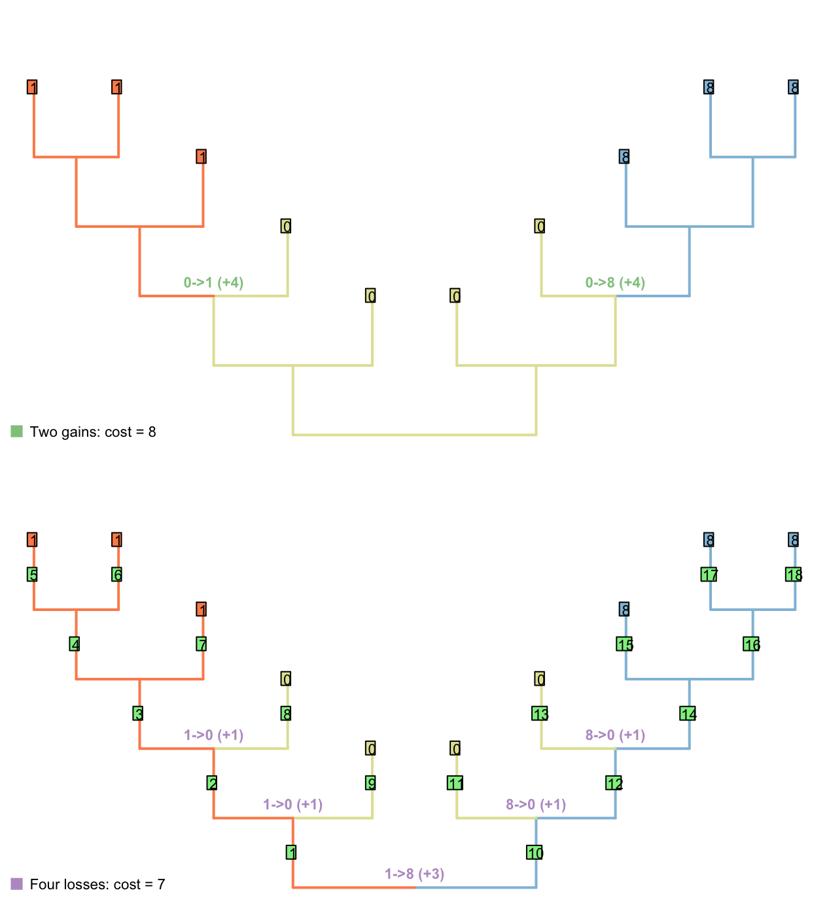
This score denotes two evolutionary observations that cannot be attributed to inheritance from a common ancestor: the blueness of tail in the blue tailed taxa (as the common ancestor inherited a red tail), and the redness of tail in the second region of the tree (as the common ancestor of all tail-bearing taxa did not itself have a tail, so tail colour could no be inherited).
2.1.1 What does it take to denote separate regions?
It takes three inapplicable nodes (including tips) to force two regions of the tree to be separrated by an inapplicable region.
This can be estabilshed by imagining the Fitch optimisation of a separate character
Applicability of the character of interest: (0), inapplicable; (1), applicable
In the case of tail colour, this applicability character has the same distribution as the presence / absence of the tail, but this is not necessarily the case (there may be a range of reasons to code a character as inapplicable).
In the tree shown above, the Fitch algorithm identifies two regions where the applicability character is unambiguously ‘applicable’:
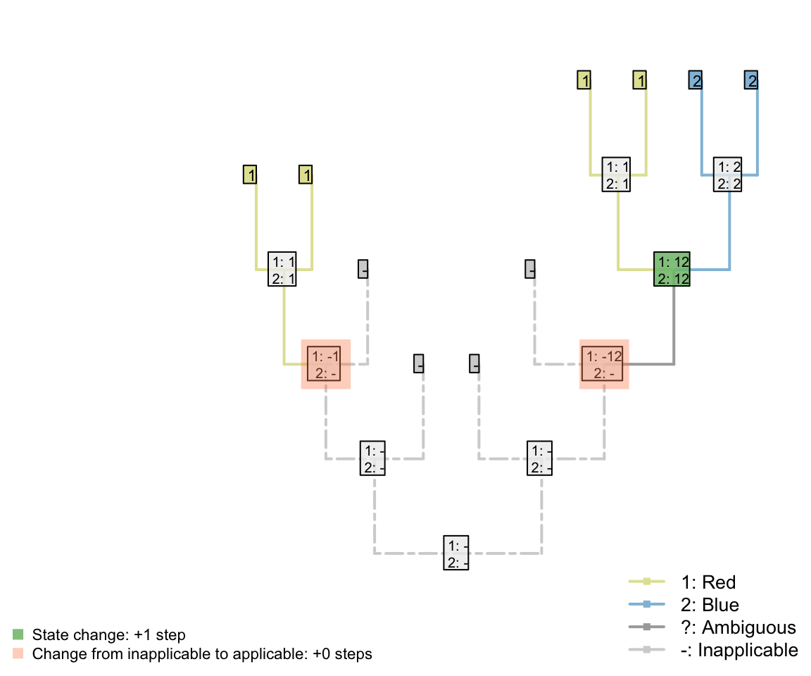
If one of the inapplicable tips had instead been ambiguous, then the same distribution would arise:
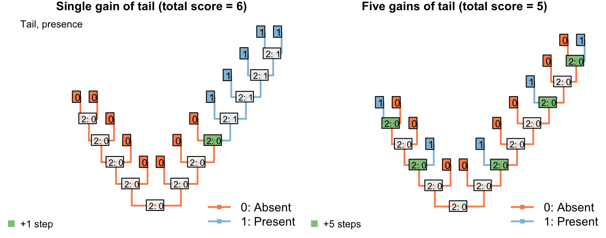
But if two were ambiguous, then the ‘inapplicable’ region could equally be interpreted, under the Fitch algorithm, as ‘applicable’ – with the two inapplicable tips becoming inapplicable in the branches that led to them:

The ambiguous region of this tree may parsimoniously be interpreted as applicable, and doing so increases the opportunity to attribute shared colours in the tail to common ancestry, this our algorithm chooses to interpret the region as applicable whereever it is parsimonious to do so.
Note that the three inapplicable tips necessary to define an inapplicable region must be in a contiguous region of the tree, separated from one another only by taxa whose applicability is ambiguous, in order for two applicable regions to be reconstructed as separate.
2.1.2 How this fixes the problem
This overcomes the problem where steps cancould be avoided by inferring multiple innovations of a character:

On the other hand, if taxa either have a blue, scaly, straight tail or a red, smooth, curly tail, then the fact that the tails have so little in common means that it wouldn’t be entirely surprising if the two different tail types evolved twice. This scenario thus incurs a cost of only one step (for the additional origin of the tail) more than if the tail evolved once, and change all its attributes:

2.1.3 Summary
This is the desired behaviour. But how do we count this in practice?
In brief, we evaluate for each tip whether the character in question is applicable, inapplicable, or ambiguous (could be either), and use the standard Fitch algorithm on this applicability data to reconstruct the state of each internal node, reconstructing ambiguous nodes on the uppass as applicable.
This done, we conduct a second Fitch-like pass on the tree, in which we count transformations if they occur at nodes in which the character has been reconstructed as applicable. Additional regions are also counted on this downpass, by counting nodes that are ancestral to an inapplicable region of the tree that itself leads to an as-yet-uncounted applicable region.
2.2 Implementation
Consider a tree with 12 taxa and the following multi-state characters with inapplicable data 23--1??--032; say the character is “colour of the tail” ranging from 0 to 3 (four colours). Four taxa in our example have no tail (hence the inapplicable data -) and for two taxa, the data is missing (?- we don’t known the colour of the tail or even whether the taxa have a tail or not).

We can use the Inapp package to apply our four passes inapplicable algorithm for this character on this tree.
## Loading the Inapp package
library(Inapp)
## The tree
tree <- read.tree(text = "((((((1,2),3),4),5),6),(7,(8,(9,(10,(11,12))))));")
## The character
character <- "23--1??--032"
## Applying the NA algorithm
matrix <- apply.reconstruction(tree, character, method = "NA", passes = 4)Here is what is happening:
2.2.1 Passes 1 & 2
The first two passes are a standard Fitch algorithm applied the the parent character of the studied character (see [Fitch.Rmd]) with a special rule for the inapplicable state (-).
For the first pass (first downpass):
- If state in common between the two descendants is the inapplicable state, but that both have also applicable states, set the node’s state to be the union between the descendants states (rather than their state in common).
- If there is no state in common between the descendants and both descendants have applicable states, remove the inapplicable state from their union (rather than simply setting the nodal state to their union).
For the second pass (first uppass):
- If the focal node has both applicable and inapplicable states, set it to be the inapplicable state only if its ancestor has also only the inapplicable state, else remove the inapplicable state.
- If the focal node has only an inapplicable state and it’s ancestor has not only the inapplicable state, set it to be the union between it’s descendants states if their are both applicable, else, leave it as the inapplicable state.
## Plotting the NA two first passes
plot(matrix, passes = c(1,2), counts = 0, main = "Inapplicable reconstruction")
The parent character can be considered as a binary character “presence (1) or absence (0) of a tail” that would be 11001??00111. The character would be reconstructed as:
## The parent character
parent_character <- "11001??00111"
## Applying the Fitch algorithm
matrix_parent <- apply.reconstruction(tree, parent_character, method = "Fitch", passes = 2)
plot(matrix_parent, passes = c(1,2), counts = 0, main = "Fitch reconstruction of the parent character")
As you can see, both reconstructions are identical: nodes with no tail are denoted as 0 in the case of the “parent character” and as - for our current character. Note however that contrary to the Fitch algorithm, there is no tree score counting in our algorithm for the two first passes. Indeed, in the case of the Fitch reconstruction of the “parent character”, the gain or losses of a tail are counted but not the changes in states for the subtending character (the tree score is 3 in Fitch, 5 in our case).
2.2.2 Pass 3
The third pass further resolves ambiguities at nodal states. If the node is applicable, the standard Fitch downpass comparisons between the descendants are applied (see [Fitch.Rmd]) but with the rules relative to the inapplicable state described for the first downpass above.
During this pass, we can also count the tree score. This score is composed of both:
- the change in states (e.g. the change in the colour of the tail)
- the change between applicable and inapplicable regions (e.g. the change in the parent character: a gain or a loss of the tail)
The changes of states are calculated the same way as Fitch for the applicable states only:
- If there is no state in common between both node’s descendants and that the node and its descendant have a least one applicable state, increment the tree score.
## Plotting the NA two first passes
plot(matrix, passes = c(1,2,3), counts = 2, main = "State changes", show.labels = c(1,2))
For example, for node n23, there is no state in common between the tip 12 (2) and 11 (3), the tree score is incremented at this node (case 1 above). Note, however, that for node n21, there is no state in common between node n22 (023) and tip 9 (-) but the score is not incremented since it does not concern applicable states only. In other words, there is no change in state at the node n21 from the tail having a colour 0, 2 or 3 to the tail not being present (-) but rather a change in the parent character between presence and absence of the tail (present is 023 and absent is -).
2.2.2.1 Tracking applicable regions
To know whether any node leads to a region of applicable states we can use a “tracker” for each node that tells us at any moment whether descendants of a node contain applicable data or not. Doing so, we can know, when a node is inapplicable and its descendant lead to applicable regions that extra applicable regions are implied by the tree. In other words and following our “colour of the tail” character, extra applicable regions imply independent appearances of the tail somewhere in the node’s descendants.
The tracker is initialised during the second pass (first uppass) and is updated during the third pass (second downpass). The tracker works as follows for each node’s left and right descendants:
- If the descendant state was resolved as applicable, the node leads to an applicable region, else, it leads to an inapplicable one.
The trackers are initialised for each node during the first uppass and then propagated back down the tree during the second downpass.
Using these trackers, we can then increments the tree score for all changes that imply a new applicable region. The switch to or from an inapplicable and applicable region are counted as follow:
- If the node is inapplicable and both descendants lead to regions of applicable states, increment the region count.
## Plotting the NA two first passes
plot(matrix, passes = c(1,2,3), counts = 1, main = "Applicable regions", show.labels = c(1,2))
For example, node n15 is solved as inapplicable but both his descendants lead to two independent applicable regions (tip 5 with the state 1 and node n18 with the states 1 and 2). This implies an independent change in the parent character (in our example, tail is absent at node n15 but evolves independently at tip 5 and node n18). Conversely, node n21 is solved as inapplicable but not both his descendants lead to independent applicable regions. This node does thus not imply an independent change in the parent character.
Note that the number of applicable regions for a character is always at least 1 (unless every taxa has the inapplicable state) and therefore, we only count the additional regions.
Combining both scores - the number of changes in character states and the number of additional applicable regions - we get indeed a total tree score of 5 for this tree and character
## Plotting the NA two first passes
plot(matrix, passes = c(1,2,3), counts = c(1,2), show.labels = c(1,2))
Using these tree passes is enough to get the tree score (while taking into account inapplicable data!) but does not solve all ancestral reconstructions. A fourth pass (second uppass) might be necessary to finalise the node states reconstructions.
2.2.3 Pass 4
In the example above, the node n23 is still not correctly solved after the third pass. In fact, considering its ancestor’s states (023) and its descendants’ states (2 and 3), it should be resolved as 023 under a delayed transition model (DELTRAN). In order to do so, we can apply a extra pass similar to the second pass (first uppass), as described above.
## Plotting the NA two first passes
plot(matrix, passes = c(1,2,3,4), counts = c(1,2), show.labels = c(1,2))
2.3 Coding data
2.3.1 Multiple dependencies
It’s not a problem to have characters dependent on characters that are dependent on characters. Consider the following characters, whose descriptions are written in order to emphasize their heirarchical nature (following the recommendations of Sereno, 2007):
- Appendages: (0), absent; (1), present.
- Appendages, termination: (0), blunt; (1), sucker; (2), claw.
- Appendages, suckers, morphology: (0), round; (1), polygonal.
- Appendages, claws, morphology: (0), smooth; (1), serrated.
The included taxa may or may not bear appendages; if they do, then the appendages may end either with either claws or suckers, or neither (but not both). Claws come in two flavours, smooth and serrated; suckers come in two shapes, rounded and polygonal.
If character 1 (appendages) is absent, then characters 2–4 are inapplicable. Otherwise, charcter 2 (appendage termination) must take one of the three applicable values.
If character 2 (termination) has state 0 (blunt), then characters 3 and 4 (morphology of sucker / claw) are inapplicable.
If character 2 (termination) has state 1 (sucker), then character 3 (sucker morphology) is applicable and character 4 (claw morphology) is inapplicable.
If character 2 (termination) has state 2 (claw), then character 3 (sucker morphology) is inapplicable and character 4 (claw morphology) is applicable.
A sample character matrix might look like this:
| A | B | C | D | E | F | G | H | I | J | K | L | M | |
|---|---|---|---|---|---|---|---|---|---|---|---|---|---|
| Appendages: (0), absent; (1), present. | 0 | 0 | 0 | 1 | 1 | 1 | 1 | 1 | 1 | 1 | 1 | 1 | 1 |
| Appendage termination: (1), blunt; (2), sucker; (3), claw. | - | - | - | 1 | 1 | 2 | 2 | 2 | 2 | 3 | 3 | 3 | 3 |
| Sucker morphology: (1), smooth; (2), serrated. | - | - | - | - | - | 1 | 1 | 2 | 2 | - | - | - | - |
| Claw morphology: (1), round; (2), polygonal. | - | - | - | - | - | - | - | - | - | 1 | 1 | 2 | 2 |
Which would plot on a tree thus:

There’s no limit to the depth of recursion: one could add a further character
- Appendages, claws, serrations, spacing: (1), regular; (2), irregular.
that would be inapplicable in all taxa that lacked serrated claws.

To readers familiar with standard Fitch parsimony, it will be surprising to notice that the two trees receive a different score for this invariant character. When our algorithm is employed, invariant characters that contain inapplicable tokens can inform parsimony.
2.3.2 Invariant characters can inform parsimony
Consider a situation in which every tail in the observed taxa is blue – but the same complex molecular machinery is responsible for this blue colouration in every taxon.
If its underlying mechanism is considered biologically and evolutionarily meaningful, then a systematist might opt to include tail colour as an additional character, even though it is invariant in the taxa of interest. Reconstructions that attribute this common colouration to common ancestry will be more parsimonious than those that do not.
| A | B | C | D | E | F | G | H | |
|---|---|---|---|---|---|---|---|---|
| Tail: (0), absent; (1), present | 0 | 0 | 0 | 0 | 1 | 1 | 1 | 1 |
| Tail colour: (1), blue; (-), inapplicable | - | - | - | - | 1 | 1 | 1 | 1 |
| Body colour: (1), black; (2), white | 1 | 1 | 2 | 2 | 2 | 2 | 1 | 1 |
Let’s compare two trees. The first groups taxa based on the presence of tails; the other groups taxa based on body colour.
 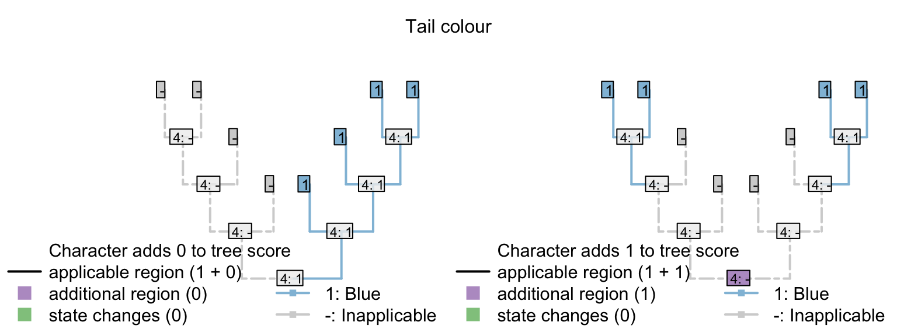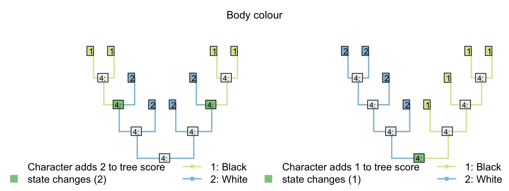
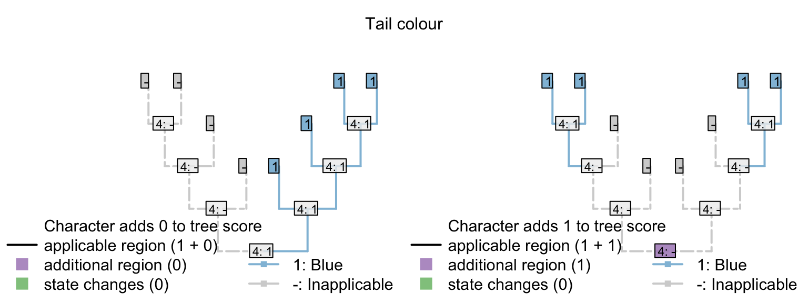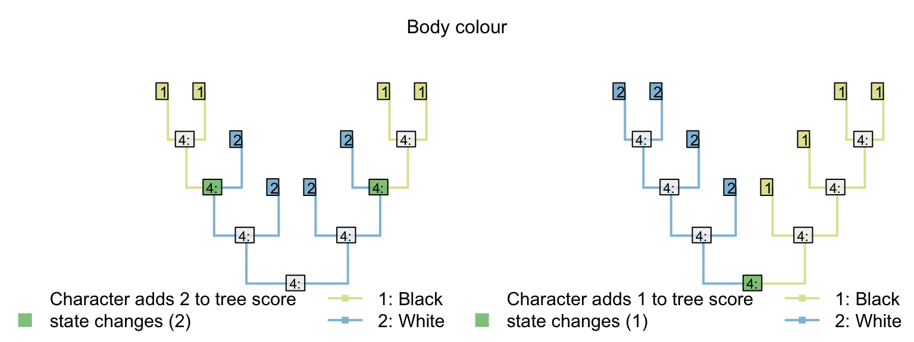
Where the tail has a single origin (one step), blue colouration also evolves once (zero steps), but body colour must change twice (two steps; total score = three). But where body colour changes only once (one step), the tail necessarily arises twice (two steps), meaning two independent origins of its distinctive blue colouration (one extra homoplasy; total score = four)
If the invariant tail colour character had not been included, both trees would have the same score, and there would be nothing to choose between them. As such, the inclusion or exclusion of invariant characters must be carefully evaluated: if there is a case that an invariant (ontologically dependent) character implies an exclusive common ancestry between those taxa that share it, then it should be included; if not, then it should be excluded.
2.3.3 Variable but ‘parsimony uninformative’ characters can inform parsimony
The same effect of course follows if a character has an additional state that is only observed in one taxon.
| A | B | C | D | E | F | G | H | I | |
|---|---|---|---|---|---|---|---|---|---|
| Tail: (0), absent; (1), present | 0 | 0 | 0 | 0 | 1 | 1 | 1 | 1 | 1 |
| Tail colour: (1), red; (2), blue; (-), inapplicable | - | - | - | - | 1 | 1 | 1 | 1 | 2 |
| Body colour: (1), black; (2), white | 1 | 1 | 2 | 2 | 2 | 2 | 1 | 1 | 1 |
Any tree that implies that blueness evolves multiple times will incur an additional penalty that would not have been encountered had the tail colour character been omitted.

2.4 This may not be desirable in neomorphic characters
The more general rule is that any tree that reconstructs the same state arising twice, independently, in an ontologically dependent character will incur a penalty relative to one that reconstructs that same state arising once.
With transformational characters, this is often a desideratum – as discussed above.
In particular neomorphic characters, however, it may not be desirable to penalise trees in which the absence of a character arises multiple times.
Let us imagine that there is a biological reason to believe that tails in a particular group lacked poisoned barbs when they first evolved: that is, poisoned barbs are an evolutionary innovation that can only be added to a tail once a tail is already present.
| A | B | C | D | E | F | G | H | I | |
|---|---|---|---|---|---|---|---|---|---|
| Tail: (0), absent; (1), present | 0 | 0 | 0 | 1 | 1 | 1 | 1 | 1 | 1 |
| Tail, poison barbs: (-), inapplicable; (0), absent; (1), present | - | - | - | 0 | 0 | 0 | 0 | 1 | 1 |
2.4.0.1 Three scenarios
The presence of poison barbs obviously contains grouping information – a reconstruction that attribute the presence of posion barbs to a single evolutionary gain in a common ancestor is parsimonious with respect to that character (even if it is less parsimonious with respect to another – e.g. the presence or absence of a tail).

Consider a reconstruction in which a tail evolved twice, and barbs evolved twice. Here, the duplicate origin of barbs (as well as the duplicate origin of the tail) makes this reconstruction less parsimonious.
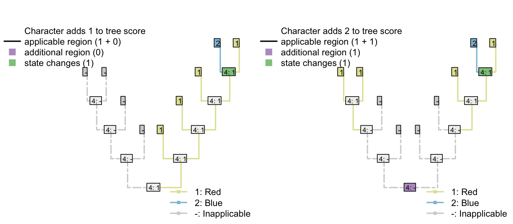
But what about a situation in which a tail evolved twice, and lacked barbs each time it evolved? Coding this character as transformational penalises the duplicate origin of the state “no poison barbs”, making this reconstruction less parsimonious.
If we expect a tail, when it evolves, to lack barbs, then the second origin of “no barbs” does not represent a homoplasy: it’s not a feature that has evolved twice, but rather an observation that something has not evolved twice.
The absence of poison barbs in the two ancestral tail-bearers has been inherited from a common ancestor that did not itself bear tail barbs (by virtue, in this instance, of not bearing a tail). This second non-origination should not, therefore, be penalized in this situation.

This problem has arisen because the inapplicable token has been used in a character that is, in fact, applicable.
The statement “A tail is absent; the tail is red” is not logically consistent, which is why the inapplicable token is necessary. In contrast, the statement “A tail is absent; tail barbs are absent” is logically consistent, and the inapplicable token is not necessary. Instead, the ‘absence’ token should be employed instead of the inapplicable:

The point here is that the inapplicable token ought only to be used in tips where a character description literally does not apply. As an example, De Laet (De Laet, 2017) contends that the character “Tail: absent/present” is inapplicable in an angiosperm. We disagree. Angiosperms do not have tails. “Tail”" should be coded as absent in angiosperms.
One way to emphasize this distinction in character matrices is to reserve the 0 token to denote absence, and denoting states of transformational characters using the positive integers:
| A | B | C | D | E | F | G | H | I | |
|---|---|---|---|---|---|---|---|---|---|
| Tail: (0), absent; (1), present | 0 | 0 | 0 | 1 | 1 | 1 | 1 | 1 | 1 |
| Tail, poison barbs: (0), absent; (1), present | 0 | 0 | 0 | 0 | 0 | 0 | 0 | 1 | 1 |
| Tail, colour: (-), inapplicable; (1), red; (2), blue | - | - | - | 1 | 1 | 1 | 2 | 2 | 2 |
One implication of this coding strategy is that the loss of a tail (a single evolutionary event) causes the loss of all contintent characters – characters are not independent.

If a poisoned tail was present in a lineage, then lost, then re-gained, would one expect the re-gained tail to also re-gain its poisoned barbs? One could spend some time evaluating whether this behaviour has a biological underpinning, or whether it is desirable – is a reconstruction that invokes the loss of a complex tail more parsimonious than one that invokes the loss of a simple tail?
Indeed, it would be straightforwards to construct an algorithm that does not penalise losses where the loss corresponds to the inferred loss of a parent character.
The underlying issue, however, is that both parsimony and the Mk model assume character independence; it is perhaps more fruitful to focus effort on developing models of evolution that take proper account of character non-independence.
2.4.0.2 Does absence contain phylogenetic information?
In some cases, the absence of a feature (e.g. serrations) may represent a transformational character and should thus be coded as such. But this decision is an important one and merits careful thought. A researcher may or may not be justified in including properties of a tail that occur in only one, or even in none, of the taxa of interest, for if absence is informative for parsimony, then such characters will influence tree topology: parsimony uninformative characters inform parsimony.
| A | B | C | D | E | F | G | |
|---|---|---|---|---|---|---|---|
| Tail: (0), absent; (1), present | 0 | 0 | 0 | 1 | 1 | 1 | 1 |
| Tail, margin: (-), inapplicable; (1), smooth; (2), serrated | - | - | - | {12} | {12} | 1 | 1 |
| Tail, glow-in-the-dark pigment: (-), inapplicable; (1), absent; (2), present | - | - | - | {12} | {12} | 1 | 1 |
| Tail, ability to generate electricity: (-), inapplicable; (1), absent; (2), present | - | - | - | {12} | {12} | 1 | 1 |
Note that each of the unobserved characters provides evidence against independent origins of the tail, preferring instead independent losses:

Under the simple matrix presented above, the left-hand tree receives a score of five (two independent gains of the tail, plus the three ontologically dependent characters with an additional step each), whereas the right-hand tree scores but three (three independent losses of the tail; no steps in the ontologically dependent characters), making it more parsimonious.
If the three ontologically-dependent characters were coded as ‘absent’ (instead of inapplicable) when the tail was absent, then the left-hand tree would be preferred (with a score of 2 vs. 3).
The two trees are equally parsimonious (both scoring three) if tail margin is treated as a trasnformational character (inapplicable when tail absent) and the other characters are treated as neomorphic (absent when tail absent).
| A | B | C | D | E | F | G | |
|---|---|---|---|---|---|---|---|
| Tail: (0), absent; (1), present | 0 | 0 | 0 | 1 | 1 | 1 | 1 |
| Tail, margin: (1), smooth; (2), serrated | - | - | - | {12} | {12} | 1 | 1 |
| Tail, glow-in-the-dark pigment: (-), inapplicable; (0), absent; (1), present | 0 | 0 | 0 | {01} | {01} | 0 | 0 |
| Tail, ability to generate electricity: (-), inapplicable; (0), absent; (1), present | 0 | 0 | 0 | {01} | {01} | 0 | 0 |
2.5 Coding ontologically dependent neomorphic characters
2.5.1 Neomorphic and transformational characters
Researchers should be aware that our algorithm treats nemorphic characters as though they are transformational; that is, “absence” of a feature is seen as equally informative as “presence”.
In some cases, this may be desirable. One might argue that “Serrations on tail margin: (0), absent; (1), present” behaves as a transformational character, as a tail must have a margin of some sort, and “serratedness” is a property of the margin – perhaps there is no reason to assume that the tail was primitively simple, or that serrations necesssarily represent a secondary increase in complexity.
In other cases, this may not be desirable. As an example, consider a complex character, such as the eyespots on the tail of a peacock.
| A | B | C | D | E | F | G | H | I | |
|---|---|---|---|---|---|---|---|---|---|
| Tail: (0), absent; (1), present | 0 | 0 | 0 | 1 | 1 | 1 | 1 | 1 | 1 |
| Tail eyespots: (-), inapplicable; (0), absent; (1), present | - | - | - | 0 | 0 | 0 | 0 | 1 | 1 |
The presence of tail eyespots obviously contains grouping information – we should prefer reconstructions that attribute the presence of tail eyespots to common ancestry to those that imply independent gains of this complex characteristic.
It is less obvious whether the absence of such complex features should convey grouping information. This decision ought to be defended for individual characters by individual researchers, but researchers should be aware of the implications of their chosen coding strategy.
2.5.2 Three trees
Consider the following three scenarios:
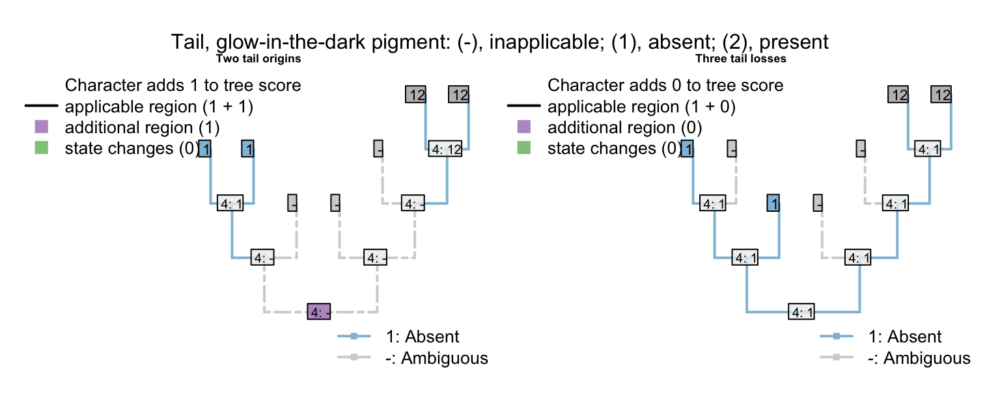
Each of these trees implies two independent origins of the tail. Their score differs only with respect to the eyespots character.
2.5.2.1 One tail spotted, one not
The first tree has the minimum possible score for the eyespots character. (A score of one would also be obtained if the tail evolved once, and a single transformation occurred between 0 and 1 – but we are only considering trees where the tail evolved twice.)
2.5.2.2 Two spot appearances
The next tree has a score of two for the eyespots character, which is obviously correct: Eye spots, a complex character, have evolved twice independently, which is not as parsimonious.
2.5.2.3 Two non-spotted appearances
The final tree also has a score of two for the eyespots character: even though eyespots have only evolved once, just as in the first tree. The score of two occurs because the “absence of eyespots” has evolved twice.
2.5.2.4 Evaluation
It is possible that a researcher might feel uncomfortable grouping taxa on the basis of the non-occurrence of a complex feature that did not occur in their common ancestor. Putting this another way, it is not clear that the fact that a feature has not evolved in two instances represents a homoplasy. The absence of eyespots in a tail is not an evolutionary innovation – it is an inheritance from a common ancestor that did not have eyespots (and did not have a tail).
2.5.2.5 Implications
A researcher that argues that the absence of a feature contains phylogenetic information must surely include all properties of a tail that are only observed in a single taxon (because the absence of that feature in other taxa also contains grouping information). A researcher may also include all properties of a tail that do not occur in any of the taxa of interest, for these too will influence tree topology: parsimony uninformative characters inform parsimony.
| A | B | C | D | E | F | G | |
|---|---|---|---|---|---|---|---|
| Tail: (0), absent; (1), present | 0 | 0 | 0 | 1 | 1 | 1 | 1 |
| Tail with glow-in-the-dark pigment: (-), inapplicable; (0), absent; (1), present | - | - | - | {01} | {01} | 0 | 0 |
| Tail with ability to generate electricity: (-), inapplicable; (0), absent; (1), present | - | - | - | {01} | {01} | 0 | 0 |
Note that each of the unobserved characters provides evidence against independent origins of the tail, preferring instead independent losses:

Thus the simple matrix presented above sees both of these trees as equally parsimonious – three losses of a single-origin tail that lacks two unlikely attributes is considered as likely as one independent gain of a similar tail.
This behaviour is desired if the similarity between the tails requires an evoltuionary explanation. But the absence of these features does not seem any more difficult to explain if the tails do not have a common ancestor.
The solution here is to deploy a different character coding strategy, coding absences as absences. That way, absence CAN be inherited from a common ancestor, in which a complex-feature-of-the-tail (eyespots, glow-inthe-dark pigment) was absent (and the tail was absent too).
| A | B | C | D | E | F | G | |
|---|---|---|---|---|---|---|---|
| Tail: (0), absent; (1), present | 0 | 0 | 0 | 1 | 1 | 1 | 1 |
| Tail with glow-in-the-dark pigment: (-), inapplicable; (0), absent; (1), present | 0 | 0 | 0 | {01} | {01} | 0 | 0 |
| Tail with ability to generate electricity: (-), inapplicable; (0), absent; (1), present | 0 | 0 | 0 | {01} | {01} | 0 | 0 |
This can be handled by the Fitch algorithm, and works well in simple cases:
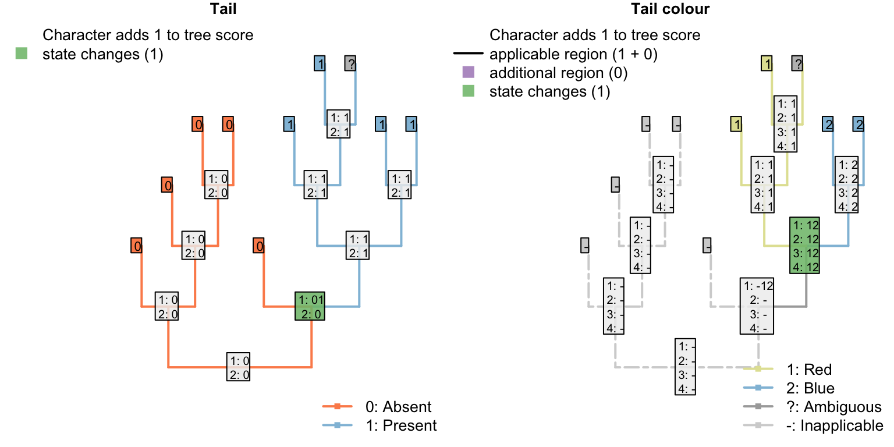
The behaviour only becomes questionable when a tail is secondarily lost, then re-gained, as the loss of a tail seems like it should be a single evolutionary step, but also causes the loss of all contingent characters, which must then “reevolve” as though they had never existed:

Perhaps there are cases – as might be seen in phenotypic plasticity – where a tail might be lost, and then re-activate preexisting genes when it evolves again? This starts to require an explicit model of evolution, however, which is somewhat beyond the remit of parsimony.
2.5.3 Recommendation
- Neomorphic characters should probably be coded as absent everywhere they are absent, whether this is because there’s no tail or because there’s a tail without the complex feature.
If you’re coding a neomorphic character as transformational, then you encounter problems.
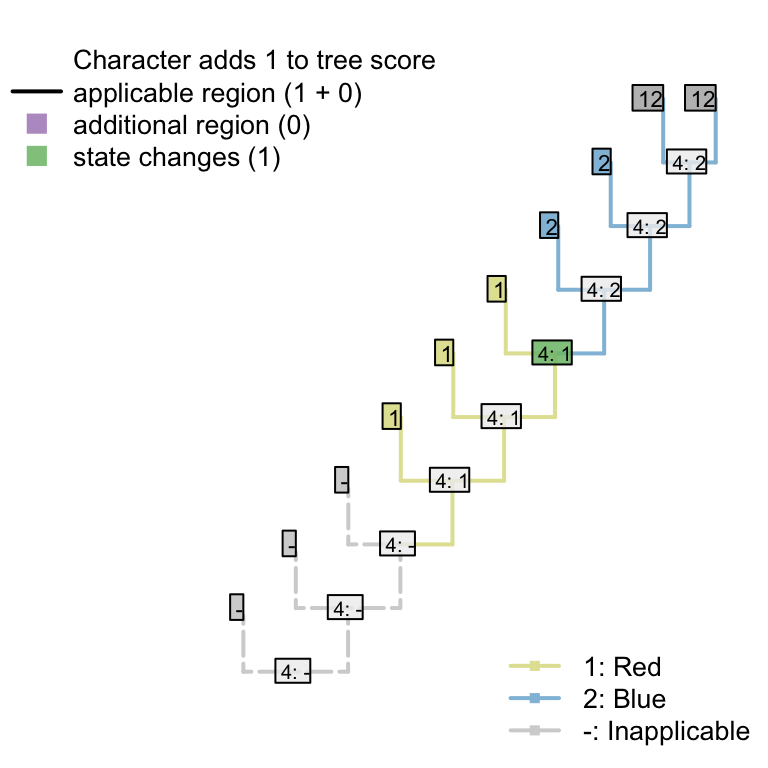
2.6 Ambiguity
Ambiguous data does not pose a problem for the algorithm, but the nature of the ambiguity must be considered when scoring a character.
2.6.1 Ambiguity when parent character ambiguous
If it’s not clear whether or not a taxon has a tail, then tail colour should be coded as ?, denoting that any possible token (including the inapplicable token) may be the most parsimonious for the tail.
In trees in which the tail can be reconstructed as present, the ambiguous tip will be reconstructed as having a tail of the appropriate colour:
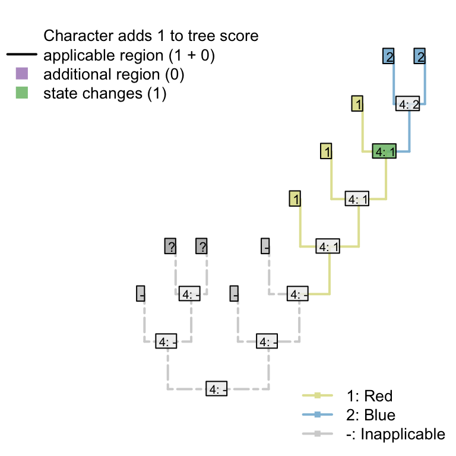
In trees in which the tail cannot be reconstructed as present without inferring a homoplasious origin, the tail colour will be reconstructed as inapplicable:

2.6.2 Ambiguity when parent character known
If a taxon is known to have a tail, there are two scenarios for ontologically dependent transformational characters:
2.6.2.1 Subordinate character has finite states
If the subordinate character must take one of a finite set of values, then the unobserved property of the tail is known to belong to these values and should be coded accordingly.
For example:
- Tail: (0), absent; (1), present
- Tail margin: (0), smooth; (1), serrated.
Assume that the tail margin must either be smooth or serrated, and there is no reason to assume that either state is ancestral (i.e. the character is strictly transformational). Tail margin should then be coded as {01}: i.e. the tail is known to have taken one of the two states 0 or 1.
2.6.2.2 Subordinate character may have unobserved states
A more complicated situation arises where a subordinate character may have unobserved states, as with
- Tail colour: (0), red; (1), blue.
A taxon that is known to have a tail, but whose tail colour is uncertain, should generally be coded as ?.
Coding it as {01} would be appropriate if the tail was known to certainly be homologous with other tails in the dataset, in which case it would be most parsimonious to assume that the tail colour is the same colour as the ancestor of the tip, which was necessarily either red or blue.

But if, as will more often be the case, homology of the tails is not known a priori, then it is possible that this taxon has a tail that is not homologous with any other tail whose colour has been observed.
In this case, coding the tail colour as {01} states that the tail is the same colour as a tail that has already been observed. This means that the independent origin of the tail also represents an independent origin of this particular colour – and hence an instance of homoplasy.

Coding the tail colour as ? allows the possibility that the independently- evolved tail has a different colour to the tails already observed – green, perhaps. Reconstructing the tail colour as a colour that has not already been observed avoids an instance of homoplasy, and is therefore more parsimonious.
In the case that the unknown tail evolved independently and was green, the original character formulation – which only provides tokens for red and blue tails – cannot be applied and is thus inapplicable. Our algorithm will thus reconstruct tail colour as being inapplicable in such a taxon.

2.6.3 Recommendation
We therefore recommend the following coding schema for ambiguous tips where the tail is (A) known to be present; (B) ambiguous; (C) known to be absent:
| A | B | C | |
|---|---|---|---|
| Tail: (0), absent; (1), present. | 1 | ? | 0 |
| Tail margin: (0), smooth; (1), serrated. | {01} | ? | - |
| Tail colour: (0), red; (1), blue. | ? | ? | - |
2.7 Examples
This vignette describes how the algorithm approaches some example trees. We follow the example of a tail coded using two characters:
- Tail: (0), absent; (1), present;
- Tail colour: (0), red; (1), blue.
2.7.1 Some caterpillars
First we’ll address some pectinate “caterpillar” trees, in which eight taxa have tails (and eight do not), four of which are red, four of which are blue.
An optimal tree with this character invokes a single origin of the tail, and a single change in tail colour, thus incurring a score of two. Here is one example:

If we insist that the tail evolves twice, then the best score is accomplished by reconstructing a different colour of tail in each of the two regions in which the tail is present. On a caterpillar tree, this means the loss of a tail that has one colour, and an independent innovation in a tail-less taxon of a tail that has a different colour:
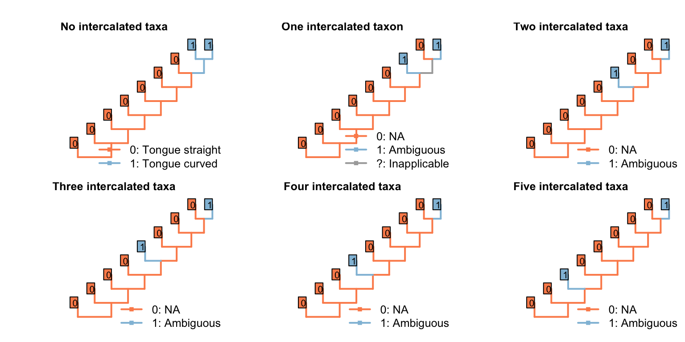
Under the parsimony criterion, it is considered less optimal if a tail, when it re-evolves, happens to independently re-evolve a colour that has already been observed – “blueness” has evolved twice on the following tree, meaning that the second innovation of “blueness” represents an instance of homoplasy.

2.7.2 Three equally suboptimal alternatives
The following three trees differ in the number of innovations of the tail that are implied, and the number of changes in tail colour. All are equally parsimonious.
Under the first, our algorithm reconstructs the tail as ancestrally present, being lost on edge 2, gained on edge 5, lost in tips H and I, lost on edge 11, and gained on edge 14 (a total of six homoplasies). It further reconstructs independent, homoplastic origins of tail redness on edge 5, tail blueness on edge 14, and a change in tail colour from red to blue somewhere between edges 7 and 9 (three homoplasies).

In the second, our algorithm reconstructs the tail as ancestrally present, being lost in tips B, D, E, H, and I, and on edge 11, before being independently gained on edge 14 (a total of seven homoplasies).
It further reconstructs an independent, homoplastic origins of tail blueness on edge 14, and a change in tail colour from red to blue somewhere between edges 7 and 9 (two homoplasies).
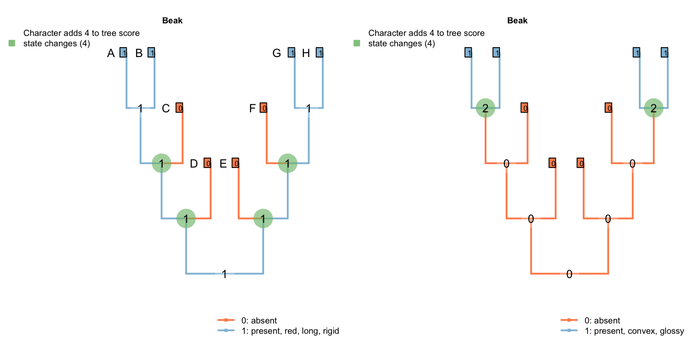
The third configuration reconstructs the tail as ancestrally present, being lost in tips B, D, F, H, J, L, N and P (a total of eight homoplastic losses). It further reconstructs a single change in tail colour from red to blue on edge 8.
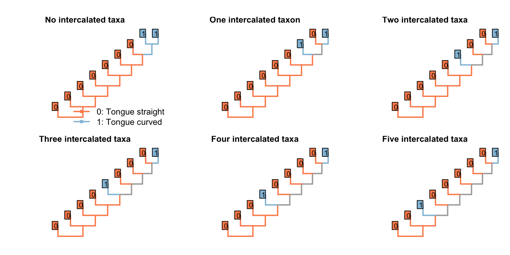
2.7.3 A better caterpillar tree
The tree below obtains a better score than any of the previous three: it implies a loss of the tail at edge 2, a gain at edge 6, a loss at edge 10, and a gain at edge 14; it invokes a homoplastic origin of redness at edge 6, one of blueness at edge 14, and a change in colour at edge 8, for a combined score of 7.
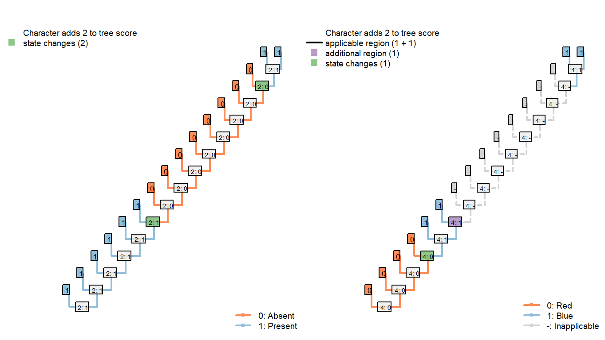
2.7.4 De Laet’s caterpillars
De Laet (2017) identifies a corner case in which our algorithm will not reconstruct every equally-parsimonious character reconstruction. Below is a simplified version of his example:
| A | B | C | D | E | F | G | H | |
|---|---|---|---|---|---|---|---|---|
| Tail: (0), absent; (1), present. | 0 | 1 | 1 | ? | 0 | 0 | 1 | 1 |
| Tail, colour: (1), red; (2),blue. | - | 1 | 1 | ? | - | - | 2 | 2 |
When optimising tail colour, we reconstruct the tail as present at all internal nodes, with independent losses of the tail in each of the three tailless taxa (i.e. edges 1, 9, 11).

The Fitch algorithm identifies other reconstructions as equally parsimonious: for example, a tail may have been lost on edge 6 and re-gained on edge 12. This also incurs three steps for the tail character, and (in De Laet’s parlance) attributes three similarities to common ancestry: the presence of a tail in tips B and C, the absence of the tail in tips E and F, and the presence of a tail in tips G and H.
We prefer reconstructions that attribute the presence of a feature to common ancestry where possible – a philosophy that shares something with Dollo’s contention that it is easier to lose a feature than to gain it. On a pragmatic level, this maximises the opportunity for subsidiary traits of the tail to be attributed to common ancestry.
In this particular case, there is an equally-parsimonious character reconstruction that our algorithm excludes, which invokes two gains (and one loss) of the tail:
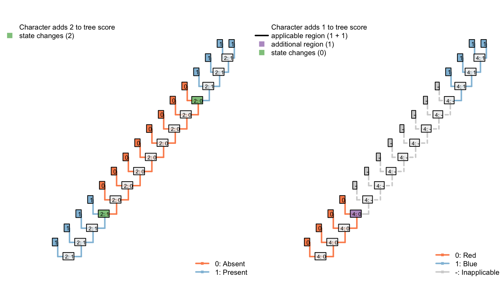
This has no effect on tree scoring, but may be relevant if complete internal nodal reconstructions are desired.
References
De Laet, J. (2005). Parsimony, phylogeny and genomics. In V. Albert (Ed.) (pp. 81–116). Oxford University Press.
De Laet, J. (2017). A note on brazeau et al.’s (2017) algorithm for characters with inapplicable data, illustrated with an analysis of their fig. 3d using anagallis, a program for parsimony analysis of character hierarchies. doi:10.13140/RG.2.2.31309.54245
Sereno, P. C. (2007). Logical basis for morphological characters in phylogenetics. Cladistics, 23(6), 565–587. doi:10.1111/j.1096-0031.2007.00161.x